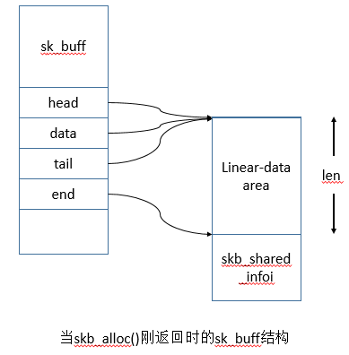
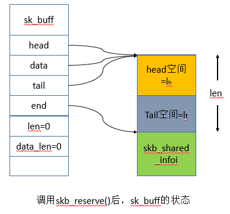
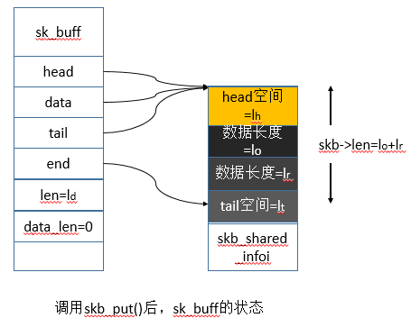
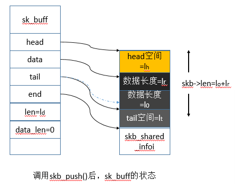

在Linux TCP/IP协议栈中，sk_buff是代表网络报文的网络缓冲区。sk_buff有三个构成部分：sk_buff、线性数据缓冲区、分页数据（struct_skb_shared_info）。当请求sk_buff时，需要传递线性数据区域的长度。sk_buff中有一些页分别指向传输层、网络层和链路层头。
这篇博客主要讨论sk_buff结构中的各个域，以及处理sk_buff结构的头、尾、结束、数据以及长度域的函数，将对sk_buff结构的data_len域和处理该域的函数做出说明。还将阐述skb_shared_info结构以及该结构的用途，然后描述了各种与sk_buff复制和排队操作相关的各种函数。
sk_buff包含线性和非线性两部分的数据。线性数据由sk_buff的数据域表示。一般来说，能够在单页中容纳的IP报文才分配一页的线性数据。如果整个IP报文的长度超过了一页的容量，处理该报文就有两个选择。一种是分配一个长度可容纳整个IP报文的先行数据区，另一种是使用分页数据区来容纳报文的剩余部分（线性数据=1页，IP剩余部分则存储在sk_buff的分页数据区中）。
结构sk_buff
在Linux中，sk_buff结构代表了一个报文，它由三个部分组成。
（1）sk_buff结构，也称为sk_buff头；
（2）包含数据的线性数据块；
（3）由struct skb_shared_info表示的非线性数据部分；
sk_buff结构包含指向特定协议头数据结构的指针域，因此，有些域包含了每一层的控制信息，以便构建协议头，同时还可以用来根据特定事件判断下一步的处理动作。有些域包含IP校验和，以及下一个协议信息。任何时候当要从某接口接收或者发送新报文时，都要为该数据块分配一个sk_buff结构，并将数据复制到sk_buff中，然后才进一步处理报文。根据需要，可以克隆（只复制sk_buff结构，但是共享数据块）或完全复制sk_buff（完全复制sk_buff结构，同时也复制了一份数据块）。
下面是sk_buff结构定义的代码块实现：
include/linux/skbuff.h
head、data、end、tail这4个域维护了线性数据区，当为新的sk_buff分配缓冲区时，需要提供线性数据区的大小。同时还要初始化sk_buff的这4个域，以指向线性数据区中合适的位置。下图是当skb_alloc()刚返回时的sk_buff结构：

结构skb_shared_info
处于线性数据区结尾的结构，包含sk_buff的分段信息和非线性数据信息。
include/linux/skbuff.h
sk_buff和DMA-skb_frag_struct
该结构是一个描述符，描述了包含sk_buff分页数据的每个分页段。
sk_buff例程操作
（1） alloc_skb()
该函数分配一个新的sk_buff，该函数的参数为数据区的长度和内存分配的模式。数据区是分配给sk_buff的内存块，报文在这个数据区中构造。当alloc_skb()放回时，head、data、tail和end指针的位置在前面的图中已经给出了。可以看出，内存分配完成后，tail空间等于为sk_buff所请求的数据块的长度，head空间和数据长度则为0。
（2） skb_reserve()
该函数会改变sk_buff的head和tail空间，它主要用来为协议头预留空间。当需要为协议头保留空间时，就调用该函数，并向其传递头空间的长度。如下图所示。

（3） skb_put()
该例程用来处理sk_buff的线性数据区。该函数为分段数据在线性数据区的结尾预留空间。在大部分情况下，用户数据将在此处理，或者说TCP/UDP载荷在此处复制，它为报文载荷创建空间，如下图所示。

下面是skb_put()的源码
include/linux/skbuff.h
（4） skb_push()
该函数处理sk_buff的data域，仅操作线性数据区。它将data域向head推进一个值，该值是以参数传递给该函数的字节数。数据长度增加多少，头空间就减少多少。skb_push()函数的源码如下所示。
include/linux/skbuff.h

下图给出了调用skb_push()来处理data域的情形。$l_0$是sk_buff的原始长度，其中虚线表示data域指针。$l_r$是调用skb_push()所请求的长度。skb_push()处理完sk_buff后，线性数据区的总长度变为$lr+l 0$，黑线表示数据指针。
（5）skb_pull()
这个函数根据字节移动数据指针，字节数则以参数的形式传递给该函数，然后返回新的数据指针。它通过修改sk_buff的data域来处理sk_buff的线性数据区。该函数将skb->len减小请求的字节数大小，从而增加了sk_buff线性数据区头空间的大小。下面是源代码。
include/linux/skbuff.h